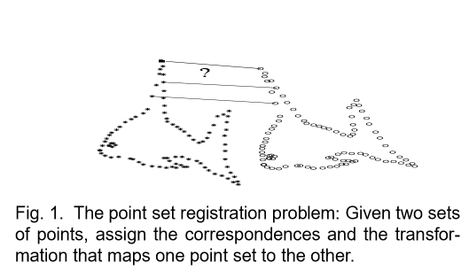

點雲註冊:相干點漂移
摘要：點雲註冊是很多機器視覺技術任務中的重要組成部分。點雲註冊的目標是在兩組點集之間分配彼此間之對應關係，并推算出將一個點集映射到另一個點集之轉換關係。有很多因素，包括，一個不確定的非剛體空間轉換、點集的大維數、雜訊和離群值，使得點雲註冊成為一個非常具有挑戰性的問題。我們引入了一種概率方法，可以同時解決剛體和非剛體的點雲註冊，稱為相干點漂移算法（CPD）。我們把兩個點集對齊考慮為一個概率密度估值問題。我們通過最大化似然（maximizing the like-hood）把GMM（高斯混合模型算法）的圖心（GMMcentroids）（表示第一個點集）匹配到數據（表示第二個點集）。我們強制將GMM圖心作為一個整體來移動，來保持點集的拓撲結構（topological-structure）。在剛體情況下，利用